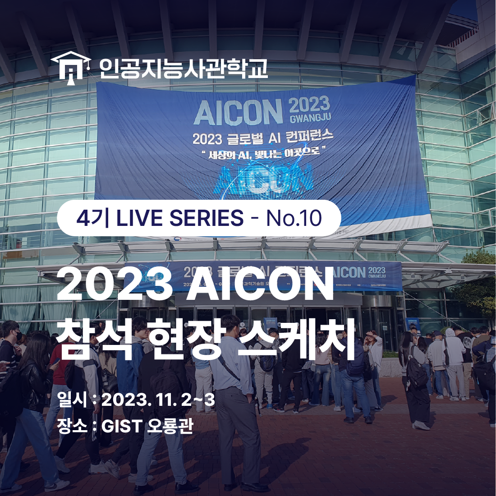
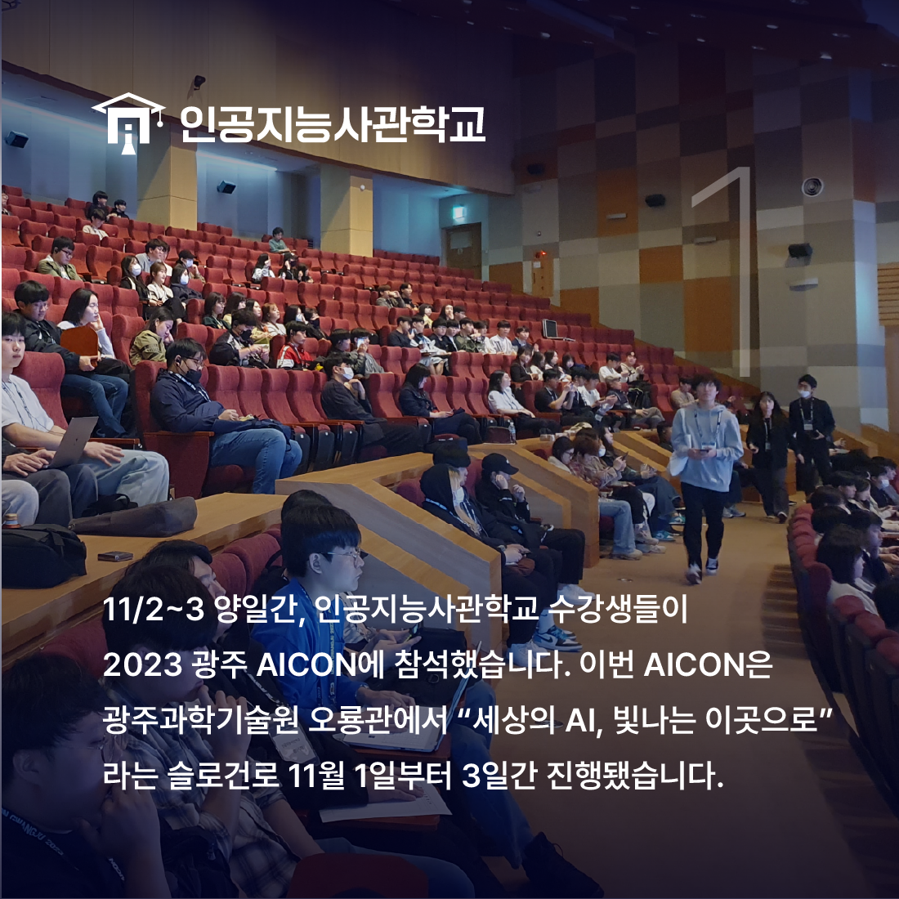
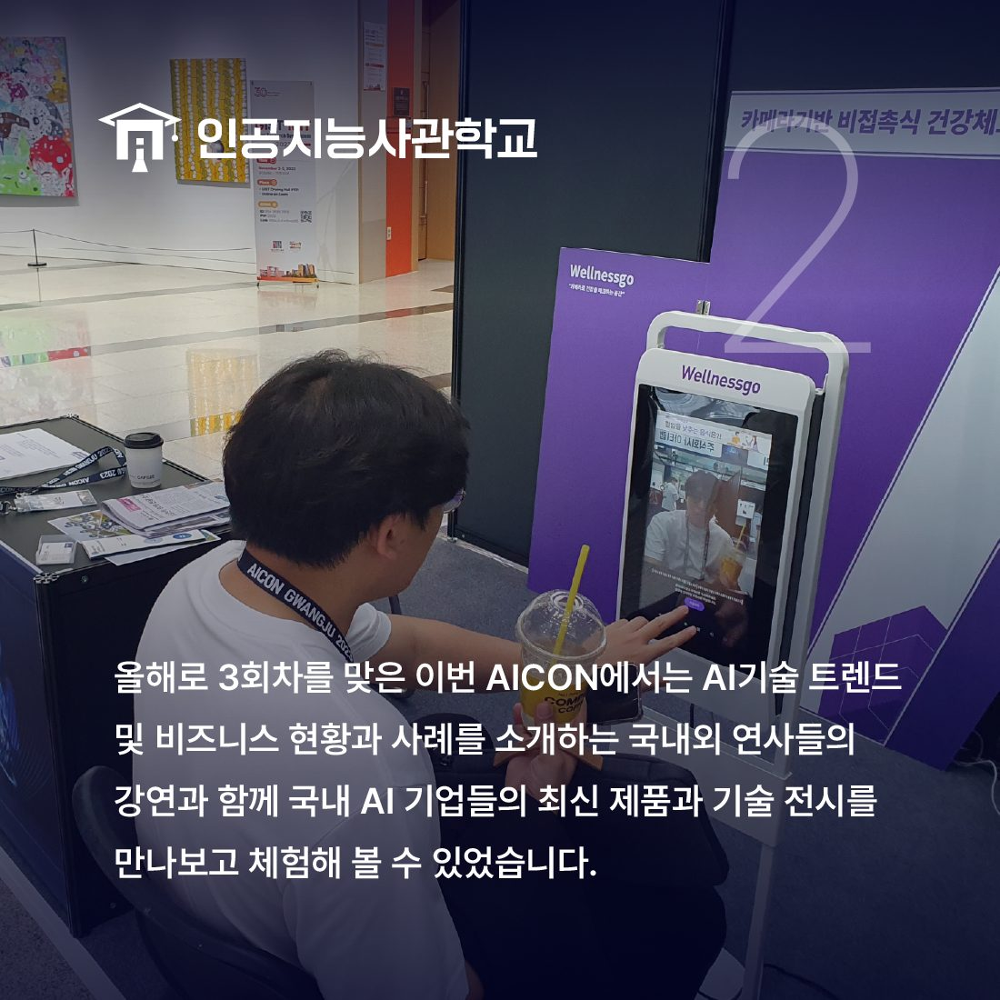

안녕하세요! 인공지능사관학교입니다.😆

11월 2~3일 양 일 간 인공지능사관학교에서는
2023 AICON에 참석했습니다.

이번 AICON은 광주과학기술원 오룡관에서
"세상의 AI, 빛나는 이곳으로"라는 슬로건으로
1일부터 3일간 진행됐습니다.

이번 AICON에서는 네이버 클라우드, 재규어 랜드로버 코리아 등
국내외 연사들이 소개하는
AI 기술 트렌드와 시장 현황 강연과
국내 AI 기업들의 기술 전시를
만나보고 체험해볼 수 있었습니다.👏
AICON에 참여한 수강생은 "초거대 AI, 자율주행 등
최신 트렌드 기술에 대해 더 많이 알 수 있었다"며
"프로젝트와도 연결된 내용이라 더 좋았다"고 말했습니다.